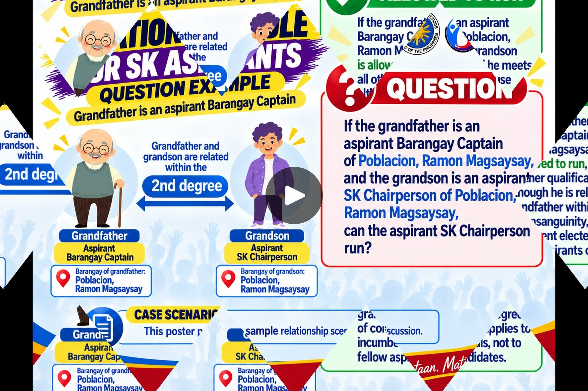

Election DayNov 2, 2026First Monday of November
LOADING DATE...
BSKE 2026 Candidate Guide
A neutral, source-based guide to qualifications, kinship rules, filing requirements, and key dates.
COC FilingSep 28 – Oct 5Plan documents early
SK Age18–24On election day
Kinship Rule2nd degreeIncumbent official test
2026 Election Timeline
Major public-facing milestones
Rule at a glance
Central issue from the case study
Kinship is not assessed in isolation.
Section 10 uses the relationship degree together with the status of the related official and the locality where the SK official seeks election.
Quick tools
Start with the question that matches your need.
Source snapshot
Official documents used by this guide
RA 11768SK qualifications
RA 122322026 election date
COMELEC 11196COC & SK age
COMELEC 11191Election calendar
CANDIDATE RULES
Candidate Qualifications
Core requirements summarized from the cited statutes and COMELEC rules.
How to use this page
This is a plain-language summary, not a substitute for an official eligibility determination. Always check the latest COMELEC issuance and the complete facts of the applicant.
RELATIONSHIP GUIDE
Kinship & Civil Degrees
Understand the relationship before applying the Section 10 kinship test.
Civil Degree Tool
Choose a relationship to see its common civil-law degree.
Relationship map
Examples commonly used in civil-degree questions
Parent1st degree
↓
Grandparent2nd degree
↔
Grandchild2nd degree
Legal concept
The Civil Code computes degrees by generations in the direct line and by counting up to the common ancestor then down to the relative in the collateral line. The SK qualification rule in RA 11768 refers specifically to relationships within the second civil degree of consanguinity or affinity to covered incumbent elected officials.
CASE STUDY
Case Scenarios
The uploaded infographic is preserved here as the featured case, with a rule-by-rule breakdown.

FEATURED CASE
Grandfather = Barangay Captain aspirant
Grandfather = Barangay Captain aspirant
Grandson = SK Chairperson aspirant
2nd-degree consanguinity Same barangay in the example Grandfather is an aspirant
The relationship is relevant, but Section 10's wording focuses on an incumbent elected official.
In the depicted facts, the grandfather is described as an aspirant rather than an incumbent elected official. The kinship restriction should therefore not be treated as automatically triggered solely by that relationship/status combination. Other SK qualifications and election rules still apply.
Important: A scenario tool is an educational aid. It cannot issue a formal COMELEC ruling or resolve disputed facts.
ELECTION CONDUCT
Selected Prohibited Acts
High-level examples from the 2026 COMELEC calendar. This list is not exhaustive.
Timing matters
COMELEC Resolution No. 11191 identifies different periods for prohibited acts. Campaigning, for example, is listed as a prohibited act from September 28 through October 21, while the official campaign period is October 22 through October 31, 2026.
INTERACTIVE TOOL
Eligibility Checker
Answer the questions below for an informational rule check based on the 2026 materials included in this guide.
Progress0 / 8 answered
FILING GUIDE
COC Checklist
Track the document and timing items highlighted by COMELEC Resolution No. 11196.
No filing fee
COMELEC Resolution No. 11196 states that no filing fee or other fee shall be imposed for filing the COC.
Incomplete COC
An incomplete COC is not accepted as filed on time; the resolution provides a last-day completion process for aspirants who are advised to complete their COC.
NOVEMBER 2, 2026 BSKE
Election Calendar
Milestones from COMELEC Resolution No. 11191 and related 2026 issuances.
FREQUENT QUESTIONS
FAQs
Plain-language answers tied to the source documents in this guide.
PRIMARY MATERIALS
Legal Sources
Official statutes and COMELEC issuances used in the guide.
External links open the official source website.
This website summarizes the cited materials. Source pages can change; verify current issuances with COMELEC before filing.
PREFERENCES
Settings
Control local display preferences. No account is required.
Guide preferences
Data controls
Saved data lives in your browser's local storage. This static site does not send checker answers to a server.
Educational-use notice
This guide is a civic-information interface and does not make endorsements, campaign recommendations, or formal legal determinations.